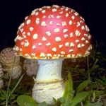
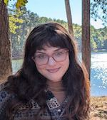
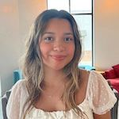

Principal Investigator
Kelly Dyer
- Professor of Genetics
- Ph.D. 2004, University of Rochester
- kdyer@uga.edu
Kelly is broadly interested in evolutionary genetics and molecular evolution. She earned her B.S. in Evolution and Ecology from UC Davis, M.S. from the University of Arizona, and Ph.D. from the University of Rochester. She spent three years at the University of Edinburgh in Scotland as a Royal Society USA Research Fellow before founding the Dyer Lab at UGA in November of 2007. While at UGA, Kelly has received a CAREER award from the National Science Foundation as well as a New Scholar in Aging Award from the Ellison Medical Foundation. Kelly is a member of the UGA Teaching Academy, and in 2017 received the Richard B. Russell Award for Excellence in Undergraduate Teaching, which is UGA's highest early career teaching award. Kelly is currently the Director of the Integrated Life Sciences graduate program and co-Director of the NIH T32 Genetics Training Grant.
Research Staff

Claire Cheng
- Research Technician
- Genetics major, UGA Class of 2024
Graduate Students

Cameron Seitz
- Ph.D. student, Genetics
- B.S. 2021 Louisiana State University
- Cameron.Seitz@uga.edu
Cameron is interested in evolutionary biology, and she is studying Drosophila - Wolbachia interactions.
Undergraduate Students
Kiera Bass
- Genetics major, UGA Class of 2025
Kaitlyn Eichele
- Genetics major, UGA Class of 2026

Hallianek Escorcia
- Genetics major, UGA Class of 2026
Julian Porter
- Entomology major, UGA Class of 2026
William Steinmetz
- Biology major, UGA Class of 2025
Lab Alumni (Graduate students)
- Theresa Erlenbach, Ph.D. 2024 in Genetics (Currently a Postdoctoral Fellow at Greenwood Genetics Center)
- Andrew Duitsman, Ph.D. 2023 in Genetics (Currently an Assistant Professor of Biology at Piedmont University)
- Paul Ginsberg, Ph.D. 2022 in Genetics (Currently a Lecturer at Ottawa University)
- Nick Arthur, Ph.D. 2018 in Genetics (Currently a Training and Development Scientist at 10X Genomics)
- Katie Pieper, Ph.D. 2017 in Genetics (Currently a Scientific Communication Manager at AlphaGroup Medical Communications)
- Emily Bewick, Ph.D. 2014 in Genetics (Currently a Medical Writer at Ashfield MedComms)
- Cheryl Pinzone, Ph.D. 2014 in Genetics (Currently a Lecturer at the University of Colorado)